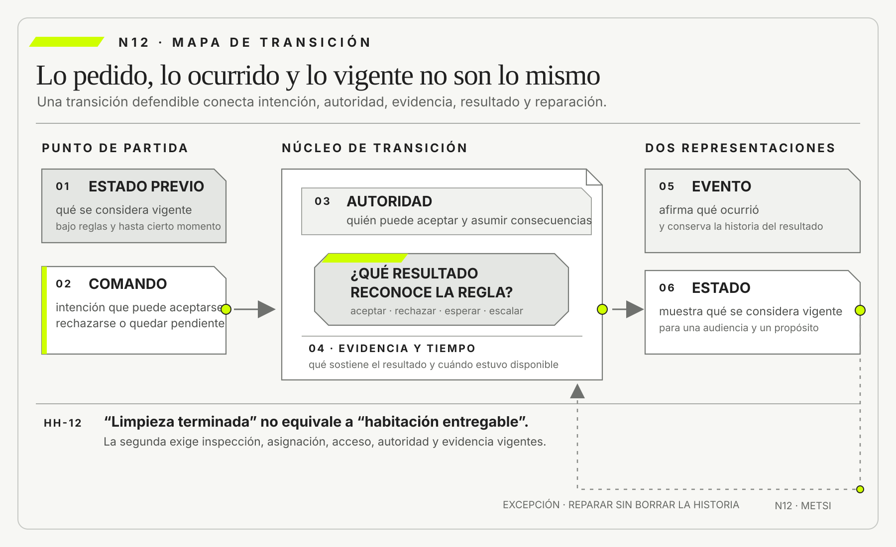

Grady Booch
Object-Oriented Analysis and Design with ApplicationsAddison-Wesley · 2007
Sistematizó el uso de abstracciones, responsabilidades y relaciones para construir modelos que puedan discutirse y evolucionar.

Un sistema de información conserva mejor la realidad operacional cuando distingue cinco funciones.
Eventos, estados, comandos, evidencia y autoridad
Ruta priorizada: 1 h 20 min a 1 h 40 min. Núcleo de lectura: 60 a 75 min; preparación: 20 a 25 min. Las extensiones agregan 30 a 45 min y profundizan el recorrido.

Nota. SIN NUM. identifica aparatos de orientación y referencia.
Seis referentes y las obras principales utilizadas para construir N12.
Sistematizó el uso de abstracciones, responsabilidades y relaciones para construir modelos que puedan discutirse y evolucionar.

Demostró que el orden de eventos en sistemas distribuidos exige relaciones causales y no puede descansar ingenuamente en un reloj global.

Sistematizó patrones como event sourcing y CQRS, junto con sus beneficios y costos de complejidad.

Contribuyó al modelo de control de acceso basado en roles y a la separación entre usuarios, roles, permisos y restricciones.

Desarrolló una concepción sociotécnica de seguridad basada en control, restricciones y retroalimentación.

Lideró el NIST AI RMF, que propone responsabilidades explícitas para decisiones y configuraciones entre personas e inteligencia artificial.
N12 no resume estas fuentes ni las convierte en receta. Las pone en tensión para construir juicio profesional.
¿Cómo distinguir lo que ocurrió, lo que alguien intentó hacer, lo que hoy se considera vigente y quién podía decidirlo?

Comando, evento, estado, evidencia y autoridad cumplen funciones distintas dentro del sistema.
La inscripción a una materia universitaria abre a las nueve. Hay un solo lugar disponible y decenas de estudiantes actualizan la pantalla. A las 9:00:04, Martina presiona “Inscribirme”. La interfaz muestra un círculo verde y el mensaje “Solicitud procesada”. A las 9:00:06 recibe un correo con el asunto “Inscripción confirmada”. Cierra la computadora convencida de que obtuvo la vacante.
En otra casa, Julián presiona el mismo botón casi al mismo tiempo. Su pantalla tarda unos segundos, pero también muestra confirmación. El sistema de autogestión registra dos solicitudes, el servicio de cupos recibe primero la de Julián y la base de la facultad conserva sólo una vacante asignada. El correo de Martina fue emitido por un componente que interpretó “solicitud recibida” como “inscripción aceptada”.
El lunes, Martina no aparece en la lista docente. Presenta el correo y una captura de pantalla. La administración consulta tres sistemas. La interfaz conserva una operación exitosa; el servicio de cupos registra un rechazo; la base académica muestra a Julián como inscripto. Ningún registro fue necesariamente inventado. Cada uno habla de una cosa distinta.
Una persona de soporte resume el incidente con una frase conocida: “los sistemas quedaron inconsistentes”. La descripción es cierta, pero todavía no permite reparar. ¿El botón emitió una orden o registró una inscripción? ¿El círculo verde confirmó recepción o aceptación? ¿El correo es evidencia de una decisión, de un mensaje enviado o de una promesa institucional? ¿Qué sistema puede declarar quién ocupa la vacante? ¿La facultad debe respetar una confirmación emitida sin cupo?
El equipo reconstruye la secuencia. La acción de Martina produjo un comando: una solicitud para reservar una vacante. El servicio de cupos evaluó reglas y produjo un evento de rechazo porque la vacante ya había sido asignada. La interfaz construyó un estado local de éxito a partir de haber enviado la solicitud, no de haber recibido la decisión.
El correo funciona como evidencia de lo que la institución comunicó, aunque no pruebe por sí solo que la inscripción académica se haya perfeccionado. La autoridad para reconocer la vacante pertenece al régimen académico y a los roles definidos por la facultad, no al componente que pudo enviar el correo.
Nombrar las piezas cambia la intervención. Si el botón se llama “Confirmar inscripción”, pero sólo envía una solicitud, el problema es semántico y de experiencia. Si el servicio acepta dos comandos contra la última vacante, existe además un problema de concurrencia. Si un correo puede crear una obligación institucional aunque la base no cambie, hace falta una política de reparación. Si soporte puede agregar a Martina manualmente, se debe registrar con qué autoridad y qué ocurre con el cupo.
El equipo decide no comenzar por una arquitectura nueva. Primero define el contrato de la transición. El comando “Solicitar inscripción” puede ser aceptado o rechazado. Sólo el evento “Inscripción aceptada” habilita el estado “Inscripta”. La interfaz debe diferenciar “solicitud recibida” de “vacante confirmada”. Cada resultado conserva identificador, momento, regla aplicada y actor responsable. Cuando una persona autorizada repara una promesa errónea, el sistema registra la excepción sin borrar el rechazo original.
La solución tampoco consiste en convertir todo en eventos. La lista actual de estudiantes puede seguir siendo una vista conveniente. El valor de la distinción está en que esa vista ya no se confunde con la historia completa ni con la autoridad para cambiarla. Se puede preguntar cómo se llegó al estado, qué comando lo provocó, qué regla fue evaluada y qué evidencia permite revisar la decisión.
La escena muestra por qué muchas discusiones técnicas son, al mismo tiempo, institucionales. Una aplicación puede aceptar un clic sin aceptar una inscripción. Un mensaje puede circular correctamente y expresar una promesa equivocada. Una persona puede tener permiso de escritura y no autoridad para modificar un régimen. Un estado puede ser actual y, aun así, no ser legítimo.
Esta lectura trabaja esa frontera. Eventos, estados, comandos, evidencia y autoridad no son cinco nombres para objetos de software. Son distinciones para conservar intención, historia, significado, responsabilidad y posibilidad de reparación dentro de un sistema de información.
HH-11 dejó tres afirmaciones con fuerzas diferentes. La más defendible sostiene que ciertas integraciones de terceros presentan mayor proporción de episodios de reparación durante el período auditado. Una segunda propone que la divergencia de significado sobre disponibilidad contribuye al problema. Una tercera formula como hipótesis que una conciliación anticipada podría reducir reparaciones sin aumentar rechazos incorrectos.

Para avanzar, el equipo observa una reserva concreta. A las 13:42, Mariela Benítez marca “limpieza terminada” en la planilla de Housekeeping. A las 13:55, una supervisora confirma la inspección. A las 14:03, el PMS recibe el valor “disponible”. A las 14:04, Lucía intenta asignar la habitación. A las 14:05, la cerradura informa batería insuficiente. Comercial, mientras tanto, había prometido ingreso a partir de las 14:00.
¿Cuándo estuvo lista la habitación? La pregunta mezcla por lo menos cuatro estados: limpieza terminada, inspección aprobada, asignable y accesible. También mezcla eventos, comandos y autoridad. La marca de Mariela describe trabajo realizado. La confirmación de supervisión reconoce una condición operativa. La asignación de Lucía es una orden condicionada. El aviso de la cerradura aporta evidencia de que el acceso no puede completarse. La promesa comercial agrega una obligación que ningún estado técnico representa por sí solo.
HH-12 no buscará elegir una palabra única para todo. Construirá una transición verificable entre intención, decisión, cambio reconocido y evidencia, con responsabilidades y reparación explícitas.
Un sistema de información representa mejor el trabajo real cuando distingue cinco funciones. Un comando expresa una intención dirigida a una autoridad. Un evento afirma que algo ocurrió. Un estado muestra qué se considera vigente bajo ciertas reglas y hasta cierto momento. La evidencia permite sostener o cuestionar esas afirmaciones. La autoridad determina quién o qué puede reconocer un cambio y asumir sus consecuencias.
Confundir esas funciones produce promesas prematuras, estados imposibles, auditorías engañosas y automatizaciones sin responsabilidad. Separarlas no obliga a adoptar una arquitectura orientada a eventos ni a almacenar toda la historia. Obliga a hacer explícito qué afirma cada representación, qué decisión la produjo, qué regla se aplicó y cómo puede repararse.
La corrección técnica tampoco alcanza. Un mensaje bien formado no demuestra que el evento sea verdadero; un permiso de acceso no crea autoridad institucional; una intervención humana no garantiza control efectivo. El diseño debe conectar semántica, temporalidad, reglas, evidencia y responsabilidad con la promesa que el sistema sostiene.
Una transición defendible separa el comando, el evento y el estado, y hace visibles la autoridad, la evidencia, el tiempo y la reparación que conectan esas representaciones.

N11 mostró que un dato sostiene una afirmación cuando conserva relación auditable con fenómeno, operacionalización, población, procedencia, transformación, incertidumbre y decisión. HH-11 delimitó qué puede afirmarse sobre las reparaciones de Hotel Horizonte y qué usos exceden la evidencia.
N12 cambia la unidad de análisis. Ya no pregunta principalmente si una tasa representa bien un fenómeno. Pregunta qué tipo de representación necesita cada cambio operacional. “Se solicitó una asignación”, “la asignación fue aceptada”, “la habitación está asignada” y “Recepción podía asignarla” no son versiones estilísticas de una misma frase. Expresan intención, ocurrencia, estado y autoridad.
El avance tampoco repite N03. Allí la frontera y la retroalimentación mostraron que observar e intervenir cambia el sistema. N12 toma una transición concreta dentro de ese sistema y pregunta cómo representarla sin borrar su historia normativa. Tampoco desarrolla todavía demoras, entrega repetida, concurrencia, consistencia, idempotencia ni reconciliación. Esos problemas pertenecen a N13. Aquí se construye el vocabulario que permitirá distinguirlos.
El producto será HH-12, mapa de transición verificable. Recibirá una afirmación de HH-11 y mostrará comando, autoridad, precondiciones, evento, estado resultante, evidencia, tiempos, excepciones y reparación.
Un evento representa una ocurrencia relevante para el sistema. Se nombra en pasado porque no ordena ni predice: “Reserva confirmada”, “Limpieza terminada”, “Inspección aprobada”, “Asignación rechazada”. Su forma declara que, según cierta fuente y cierto criterio, algo ya sucedió.
Esto no convierte al evento en hecho indiscutible. Puede haber sido emitido por error, duplicado, producido con una regla defectuosa o contradicho por evidencia posterior. La inmutabilidad técnica de un registro no garantiza verdad. Conserva que el sistema afirmó algo en un momento.
Un buen evento identifica qué ocurrió, sobre qué entidad, cuándo ocurrió, quién o qué lo produjo y con qué correlación puede vincularse a otras piezas. También delimita su semántica. “Estado actualizado” dice poco porque obliga a conocer una tabla externa. “Inspección de habitación aprobada” conserva una distinción que puede ser comprendida y auditada.
El evento debe tener relevancia de dominio. Registrar cada escritura de base produce detalle técnico sin necesariamente preservar intención. Una modificación del campo status puede deberse a aprobación, corrección, migración o reparación. Si esas causas importan para decidir, el modelo necesita representarlas.
Un comando solicita que el sistema intente producir un cambio. Se formula como acción: “Asignar habitación”, “Confirmar reserva”, “Cancelar estadía”, “Autorizar excepción”. A diferencia del evento, todavía no afirma que el cambio ocurrió.
Esta distinción protege contra la confirmación prematura. Una interfaz que muestra éxito porque envió el comando confunde transporte con decisión. Un correo que dice “reserva cancelada” antes de que el sistema valide cargos, autoridad y dependencias convierte una intención en promesa.
Todo comando necesita destinatario responsable, actor emisor, precondiciones y resultados posibles. Puede aceptarse, rechazarse, quedar pendiente o requerir revisión. El rechazo también es información. Debe explicar una razón suficiente para que la persona o el sistema sepa qué alternativa existe.
No toda interacción merece modelarse como comando. Consultar disponibilidad no intenta cambiarla. Descargar una factura no debería alterar el contrato que representa. La separación entre consulta y comando reduce efectos ocultos, aunque no obliga a implementar CQRS. Martin Fowler advierte que separar modelos de lectura y escritura agrega complejidad y sólo conviene cuando el dominio lo justifica.
Un estado representa la situación reconocida de una entidad o proceso en un momento. Puede almacenarse directamente o derivarse de una secuencia de eventos. “Habitación asignable”, “reserva confirmada” y “pago conciliado” son respuestas a preguntas operacionales.
El estado no es la suma completa de la historia. Selecciona lo necesario para una decisión. Dos reservas pueden estar “confirmadas” y haber llegado allí por caminos diferentes: pago anticipado, garantía corporativa o excepción manual. Si el camino cambia derechos o reparaciones, el estado necesita conservar vínculos con la evidencia relevante.
Una vista de estado puede estar desactualizada respecto de otra. También puede ser correcta para un propósito y equivocada para otro. “Limpieza terminada” responde por una tarea; no necesariamente por inspección, cerradura, asignación ni promesa comercial. El error aparece cuando una palabra atraviesa fronteras sin conservar su definición.
En UML, una máquina de estados modela estados y transiciones disparadas por eventos bajo condiciones. METSI conserva esa precisión, pero amplía la pregunta: ¿quién reconoce la transición, qué evidencia la sostiene y qué obligación produce? El diagrama técnico es necesario en algunos casos, pero no reemplaza la dimensión institucional.
Una consulta solicita información sin intención de cambiar el sistema. “¿Qué habitaciones son asignables?” puede responderse con una proyección. “Asignar la 412” es un comando. Mezclar ambas funciones crea operaciones que parecen lectura y producen efectos.
La separación también ayuda a reconocer incertidumbre. Una consulta puede responder “desconocido” o “actualizado hasta las 13:58”. No necesita fabricar un estado definitivo cuando la información todavía no llegó. La interfaz debe representar esa condición para que quien decide no confunda ausencia de actualización con ausencia de problema.
En el caso de la inscripción universitaria, consultar la lista no asigna vacantes. En Hotel Horizonte, ver una habitación como disponible no debe reservarla silenciosamente. Los bloqueos o reservas temporales pueden ser necesarios, pero deben modelarse como decisiones explícitas y no como efectos laterales invisibles.
La consulta tampoco es neutral por definición. Una lista puede omitir casos, ordenar prioridades o exponer información que modifica la conducta. Lo que la distingue del comando es que su contrato no autoriza una transición. Si observar produce un bloqueo, registra una preferencia o consume una oportunidad, ya existe un efecto que debe nombrarse. Esta prueba evita llamar lectura a una decisión encubierta.
Un evento es una afirmación estructurada. La evidencia permite evaluar esa afirmación. Puede incluir una firma, un documento, una lectura de sensor, un registro técnico, una observación, una aprobación o una combinación.
“Pago recibido” podría sostenerse con confirmación del procesador, identificador de transacción y conciliación posterior. “Habitación inspeccionada” puede requerir identidad de quien inspeccionó, criterio aplicado y observaciones. Un clic registrado demuestra interacción con una interfaz, no necesariamente comprensión ni consentimiento.
La evidencia debe ser proporcional al efecto. Para actualizar una preferencia reversible puede alcanzar la acción autenticada de una persona. Para cancelar una estadía, devolver dinero o negar acceso, se necesitan controles más fuertes y una vía de impugnación.
No se debe adjuntar evidencia ilimitada. Guardar imágenes, conversaciones o datos personales por si algún día resultan útiles crea riesgos. El principio es conservar lo mínimo que permite sostener, auditar y reparar la transición bajo una política de retención explícita.
La autoridad es la capacidad reconocida para ordenar, validar o asumir una decisión dentro de un sistema social. Puede estar distribuida entre personas, áreas, normas, contratos y componentes. Un permiso técnico implementa parte de esa capacidad, pero no la define por completo.
El control de acceso basado en roles fue propuesto por David Ferraiolo y Richard Kuhn y desarrollado luego por Ravi Sandhu y otros. Organiza usuarios, roles, permisos y restricciones, y resulta valioso para responder quién puede ejecutar una operación sobre un recurso. Sin embargo, que una cuenta posea permiso UPDATE no demuestra que la persona tenga autoridad para comprometer una habitación, conceder una devolución o alterar una nota.
La autoridad también depende de contexto. Una supervisora puede aprobar una habitación durante su turno y no modificar una tarifa corporativa. Recepción puede reasignar ante una falla y necesitar una autorización adicional si el cambio afecta accesibilidad. Un proveedor puede procesar un pago sin decidir si la promesa comercial fue cumplida.
Modelar autoridad exige registrar fuente normativa, alcance, condiciones, delegación, separación de funciones y reparación. Cuando la organización no puede explicar por qué un actor estaba habilitado, el sistema sólo conserva capacidad técnica.
Una transición verificable conecta situación previa, comando, evaluación, evento, estado resultante, evidencia y autoridad. No todas las transiciones contienen cada pieza como objeto separado, pero el razonamiento debe poder reconstruirse.
Considérese “asignar habitación”. Estado previo: reserva confirmada, identidad validada, habitación inspeccionada y accesible. Comando: asignar la 412 a la reserva R73. Autoridad: Recepción dentro de su turno y bajo reglas de categoría. Evaluación: no existe otra asignación vigente y la habitación cumple condiciones. Evento: asignación aceptada. Estado: habitación 412 asignada a R73. Evidencia: identificadores, reglas, tiempos y actor. Reparación: si la cerradura falla, reasignar sin borrar la historia.
Una transición puede fallar aunque cada componente funcione. El comando llega, la regla se evalúa, el evento se emite y la proyección se actualiza. Pero si la regla no representa la autoridad o la evidencia no permite verificar, la corrección técnica sostiene una decisión equivocada.
También puede haber una transición legítima sin un único mensaje que la represente. Una conversación aprobada, una firma y una carga posterior pueden formar el episodio. El análisis no debe confundir el límite de una API con el límite de la decisión. HH-12 admite piezas técnicas y humanas, pero exige que la relación entre ellas pueda explicarse sin inventar continuidad.
BPMN 2.0.2 ofrece un vocabulario preciso para representar procesos. Los eventos muestran algo que inicia, interrumpe o concluye un recorrido. Las actividades expresan trabajo. Las compuertas hacen visibles decisiones, alternativas y sincronizaciones. Los pools distinguen participantes y las lanes distribuyen responsabilidades dentro de un participante. Los flujos de mensaje representan comunicación entre fronteras; los flujos de secuencia ordenan lo que ocurre dentro de una misma frontera.
Esta gramática ayuda a detectar confusiones que N12 necesita evitar. Un evento de mensaje recibido no equivale a un comando aceptado. Una tarea terminada no prueba que el estado posterior sea válido. Una compuerta exclusiva dibujada no declara quién posee autoridad para elegir la rama. Una lane con el nombre de un área tampoco demuestra que esa área haya recibido el caso ni asumido responsabilidad. El diagrama vuelve discutible una hipótesis de coordinación, pero necesita evidencia para sostener que esa coordinación ocurrió.
En Hotel Horizonte, el equipo dibuja la solicitud de asignación como una actividad de Recepción, la inspección como una actividad de Housekeeping y la verificación de cerradura como una interacción con un proveedor. Una compuerta reúne las condiciones antes de confirmar la entrega. Luego vincula cada elemento con el comando, el evento, el estado, la evidencia y la autoridad que HH-12 exige. Si una flecha no puede asociarse con una ocurrencia observable o con un compromiso explícito, queda marcada como supuesto.
Fernando Flores y Terry Winograd permiten agregar una distinción decisiva: muchas interacciones organizacionales no sólo transportan información, también crean compromisos. Pedir, prometer, aceptar, rechazar y declarar cumplimiento modifican qué pueden esperar legítimamente los participantes. Un mensaje técnicamente válido puede no constituir una promesa si quien lo emite carece de autoridad.
A la inversa, un acuerdo producido en una conversación puede obligar a la organización aunque todavía no aparezca en la aplicación. Por eso HH-12 registra el acto, la persona o el rol que lo realiza, la condición de satisfacción y la evidencia que permite discutir si el compromiso fue cumplido.
El equipo reemplaza una etiqueta única por cuatro condiciones relacionadas:
Cada condición posee comandos y eventos propios. “Declarar limpieza terminada” no es “Aprobar inspección”. “Solicitar asignación” no es “Habitación asignada”. “Reportar batería baja” no cancela automáticamente la reserva, pero puede invalidar la asignabilidad bajo ciertas reglas.
La separación no obliga a mostrar cuatro estados al huésped. La experiencia puede comunicar una promesa simple. El sistema interno necesita conservar las distinciones que permiten cumplirla y reparar. Una interfaz sencilla no justifica un modelo semánticamente pobre.
El equipo prueba entonces dos consultas. La primera pregunta qué habitaciones terminaron limpieza. La segunda pregunta cuáles pueden prometerse a una reserva concreta durante los próximos quince minutos. La lista cambia porque la segunda incorpora inspección, acceso, asignación y autoridad temporal. “Disponible” deja de ser una propiedad aislada y se vuelve una conclusión bajo condiciones.
Esa diferencia afecta la decisión de Lucía. Si falta evidencia de cerradura, la respuesta no debe convertirse automáticamente en “no disponible”: puede ser “pendiente de verificación”. Así se evita que la incertidumbre se disfrace de rechazo y que una ausencia de mensaje se interprete como un hecho operativo.
Una transición posee al menos tres tiempos. Tiempo del fenómeno: cuándo ocurrió en el mundo. Tiempo de registro: cuándo una fuente lo capturó. Tiempo de conocimiento: cuándo estuvo disponible para quien debía decidir.

Housekeeping termina a las 13:42, registra a las 13:47 y el PMS recibe a las 14:03. Si se estudia productividad, interesa el primer tiempo. Si se audita la asignación de Lucía a las 14:00, importa qué información estaba disponible entonces. Reemplazar todas las marcas por la hora de sincronización reescribe la historia.
Los relojes también pueden diferir. Leslie Lamport mostró que en sistemas distribuidos no existe necesariamente un reloj global suficiente para ordenar todos los acontecimientos. Su relación “ocurrió antes que” permite reconocer orden causal parcial. N12 toma una consecuencia conceptual: una marca temporal idéntica o cercana no prueba por sí sola el orden semántico.
N13 desarrollará demoras, concurrencia y consistencia. Aquí basta establecer que todo evento temporalmente relevante debe declarar qué reloj utiliza y qué orden necesita conservar para la decisión.
Un sistema puede registrar todos los mensajes y no poder reconstruir una historia. La correlación vincula comandos, resultados, eventos y reparaciones de un mismo episodio mediante identificadores estables.
En una reserva, el identificador del PMS puede diferir del de la agencia, el pago y la cerradura. Unir por nombre del huésped produce errores y expone datos. Se necesita una estrategia de identidad y correspondencia que permita seguir el caso sin fingir que todos los sistemas comparten la misma entidad.
La especificación CloudEvents 1.0.2 normaliza atributos como identificador, fuente, tipo y versión para intercambiar eventos entre servicios. AsyncAPI 3.1.0 describe aplicaciones, canales, mensajes, operaciones y correlación en interfaces dirigidas por mensajes. Ambos estándares mejoran interoperabilidad, pero no deciden qué significa “habitación lista” ni quién puede declararla. El sobre técnico conserva contexto; la semántica y la autoridad siguen siendo decisiones del dominio.
La correlación tampoco equivale a causalidad. Que dos mensajes compartan reserva permite reunirlos, pero no demuestra que uno haya provocado al otro. Para sostener una cadena causal se necesitan relaciones explícitas entre comando, evaluación y resultado. Esta distinción importa cuando varias acciones concurrentes afectan la misma entidad o cuando una reparación agrupa episodios anteriores sin haberlos originado.
Los nombres genéricos trasladan significado fuera del mensaje. RoomUpdated, StatusChanged o “registro procesado” dicen que algo cambió sin explicar qué. Los consumidores deben interpretar campos y terminan construyendo semánticas incompatibles.
Un evento orientado al dominio nombra la ocurrencia: “Inspección aprobada”, “Asignación rechazada por accesibilidad”, “Promesa comercial modificada”. Debe evitar incluir como hecho una intención no confirmada. “Reserva solicitada” y “Reserva confirmada” no son intercambiables.
El nombre tampoco debe prometer más de lo que la fuente sabe. Un sensor de puerta puede emitir “Apertura detectada”, no “Huésped ingresó”. Una clasificación automática puede emitir “Documento clasificado como válido por modelo M”, no “Identidad verificada”, salvo que el proceso completo lo autorice.
El lenguaje ubicuo propuesto por Eric Evans en diseño dirigido por el dominio resulta pertinente: términos compartidos entre especialistas y software reducen traducciones ocultas. METSI agrega una prueba: el término debe conservar no sólo significado, sino también autoridad y consecuencia.
Grady Booch aporta una disciplina complementaria: una abstracción sólo es útil si selecciona propiedades relevantes y deja explícito qué responsabilidad representa. Aplicada a eventos, esta exigencia impide que un nombre elegante oculte una transición cuya regla, autoridad o efecto todavía no pueden explicarse.
El mismo conjunto de eventos puede alimentar varias vistas. Recepción necesita habitaciones asignables ahora. Dirección puede analizar tiempos de preparación. Mantenimiento necesita fallas de cerradura. No existe obligación de imponer una tabla única para todos.
Martin Fowler denomina event sourcing al patrón que conserva cambios de estado como secuencia de eventos y permite reconstruir estados. Puede aportar auditoría y vistas alternativas, pero agrega complejidad de evolución, consulta, privacidad y operación. No es la conclusión automática de N12.
Una base tradicional puede conservar estado actual más un historial selectivo y resultar suficiente. La decisión depende de cuánto importa reconstruir, corregir y explicar. Si sólo se necesita el saldo vigente de una preferencia simple, almacenar toda interacción puede ser excesivo. Si la organización debe probar quién autorizó una devolución y bajo qué regla, borrar cada valor anterior es insuficiente.
La proyección debe declarar su demora y alcance. “Disponibilidad actualizada a las 14:03” es más honesto que “disponibilidad en tiempo real” cuando existen integraciones asincrónicas. Una vista optimizada no debe presentarse como fuente original.
Los eventos pueden contener errores. Corregir no significa borrar silenciosamente. Una rectificación afirma que un dato anterior fue incorrecto y presenta el valor corregido. Una retractación retira una afirmación sin necesariamente reemplazarla. Una compensación produce una acción que contrarresta efectos, aunque no haga desaparecer lo ocurrido.
Si una reserva fue cancelada por error y luego restaurada, el sistema no volvió exactamente al punto inicial. Pudo enviar correos, liberar inventario o generar angustia. Registrar sólo “confirmada” oculta consecuencias. El diseño necesita distinguir estado final de historia reparada.
La compensación no es una máquina del tiempo. Devolver un pago repara dinero, pero quizá no una oportunidad perdida. Reasignar una habitación puede restaurar alojamiento y no borrar una espera. La evidencia debe conservar qué parte fue reparada y cuál permanece.
Elegir entre rectificar, retractar y compensar depende de qué estaba equivocado. Si el evento identificó mal la habitación, corresponde rectificar el dato. Si no existe evidencia suficiente de que la inspección ocurrió, corresponde retractar la afirmación. Si la reserva fue válidamente cancelada bajo una regla luego considerada injusta, puede corresponder compensar sus efectos sin falsificar la historia.
La persona afectada necesita una explicación coherente con esa elección. “El sistema se actualizó” no informa si cambió el hecho, la interpretación o la respuesta institucional. Una reparación defendible nombra el daño, la decisión adoptada y el aspecto que todavía no puede restaurarse.
Un registro de auditoría conserva acciones o cambios según una política. Puede ser evidencia, pero su existencia no garantiza suficiencia. Si registra usuario y hora sin motivo, regla ni resultado, permite saber quién tocó un campo y no por qué la decisión era válida.
También puede ser manipulado, incompleto o inaccesible para quien debe investigar. Un sistema seguro necesita controles de integridad, acceso, retención y separación de funciones. Un sistema justo necesita además que las personas afectadas puedan conocer y cuestionar decisiones cuando corresponda.
La evidencia se diseña desde la afirmación. Para sostener “la supervisora aprobó la inspección bajo el protocolo vigente” hacen falta identidad, protocolo o versión, resultado, momento y vínculo con la habitación. Grabar video continuo sería desproporcionado. Una marca sin protocolo sería débil.
La cadena de evidencia debe conservar accesibilidad además de integridad. Un registro cifrado e inalterable que nadie autorizado puede interpretar a tiempo fracasa como apoyo de decisión. También fracasa si sólo el proveedor puede consultarlo o si su retención vence antes del período de reclamo. Diseñar evidencia implica prever quién la necesitará, para qué controversia y durante cuánto tiempo.
Esto no exige que toda prueba resida en el mismo sistema. Puede existir un comprobante externo, una norma vigente o una observación humana. HH-12 registra vínculo, procedencia y criterio de suficiencia. La transición debe seguir siendo auditable aunque una pieza requiera custodia distinta por privacidad o seguridad.
En organizaciones reales, ninguna aplicación posee toda la autoridad. Comercial puede prometer una categoría. Housekeeping declara trabajo terminado. Supervisión aprueba condiciones. Recepción asigna. Seguridad gestiona acceso. Finanzas decide ciertas devoluciones. La transición completa cruza responsabilidades.
Esta distribución puede evitar abusos y errores. La separación de funciones impide que una misma persona cree, apruebe y concilie una operación sensible. Pero también puede producir esperas si nadie tiene autoridad para resolver excepciones.
Diseñar autoridad implica responder quién decide en el caso ordinario, quién puede exceptuar, quién revisa, cómo se delega y qué ocurre fuera de horario. Un flujo sin autoridad de reparación convierte cualquier anomalía en trabajo informal. Un flujo con excepción ilimitada vuelve irrelevantes las reglas.
Nancy Leveson analiza la seguridad como un problema de control dentro de sistemas sociotécnicos, no sólo como suma de fallas de componentes. Esa mirada ayuda a comprender que una transición segura necesita restricciones, retroalimentación y responsabilidades adecuadas, incluso cuando el software ejecuta correctamente.
En 2026, un asistente puede leer mensajes, completar formularios, recomendar una habitación o emitir comandos a otros sistemas. La palabra “agente” describe capacidad técnica, no autoridad institucional. Se debe decidir qué puede observar, proponer, ejecutar, revertir y escalar.
Una recomendación generada es una salida analítica. Un comando enviado por el agente es una intención operacional. Un evento posterior registra si el sistema la aceptó. Confundir las tres piezas produce automatización sin control. También vuelve inútil una revisión humana que recibe la decisión consumada.
El NIST AI RMF 1.0, liderado por Elham Tabassi, propone distinguir roles y responsabilidades en configuraciones entre personas e inteligencia artificial. Autio, C. et al. profundizan en su perfil para IA generativa de 2024 riesgos de integridad, cadena de valor y monitoreo. El Reglamento de Inteligencia Artificial de la Unión Europea establece requisitos de supervisión humana para sistemas de alto riesgo.
La lección metodológica no es agregar un botón de aprobación. La persona debe contar con tiempo, información, competencia y autoridad efectiva para cambiar el curso.
En Hotel Horizonte, un agente puede proponer conciliaciones y reunir evidencia. No debe declarar una habitación accesible si no posee fuente ni autoridad, ni rechazar una reserva sensible sin revisión y reparación. El límite se define por consecuencia, no por capacidad del modelo.
El equipo reúne ocho piezas del episodio de la habitación 412:
La lista no autoriza un relato único. La cerradura pudo detectar la batería antes de que el PMS aceptara, aunque el mensaje llegara después. La regla de asignabilidad no consultaba acceso. La aprobación de inspección tampoco incluía cerradura. El equipo identifica entonces una brecha de control: ninguna autoridad reunía las condiciones necesarias para reconocer “entregable”.
La intervención no consiste solamente en sumar un campo. Se define un comando de verificación de entrega, una regla que combina inspección, asignación y acceso, un evento de resultado y una autoridad de excepción. El estado “entregable” conserva versión de condiciones y momento de conocimiento.
HH-12 organiza una transición mediante nueve decisiones:
El mapa no se completa de izquierda a derecha de manera rígida. Una excepción puede revelar que el estado previo estaba mal definido. Una evidencia débil puede obligar a reducir autoridad automática. Una proyección tardía puede cambiar el diseño del comando.
Cada transición atraviesa tres preguntas. ¿El nombre describe lo que realmente ocurrió? ¿La regla utiliza condiciones suficientes para ese nombre? ¿El efecto posterior corresponde a la autoridad que aceptó el comando?
Si el evento se llama “Habitación entregable”, pero sólo valida limpieza, el nombre excede la regla. Si la regla consulta cerradura y asignación, pero cualquier cuenta puede aceptarla, el efecto excede la autoridad. Si la autoridad es correcta, pero el estado visible no se actualiza a tiempo, la promesa excede el conocimiento disponible.
La prueba debe incluir un caso ordinario, un rechazo, una demora, una corrección y una excepción. Diseñar sólo el camino feliz produce estados que no explican el trabajo real.
La coherencia se rompe también cuando el mismo nombre produce consecuencias distintas sin condición visible. “Reserva confirmada” no puede significar pago aceptado en un canal y mera recepción en otro si ambas versiones habilitan la misma comunicación. Cuando la organización necesita significados diferentes, debe nombrarlos o declarar el alcance en la proyección.
La prueba termina con una pregunta de reparación: si el evento fue falso o la autoridad estaba mal configurada, ¿qué decisión permite el modelo sin borrar el episodio? Si la respuesta exige editar directamente una tabla, la transición todavía no está completamente diseñada.
Para cada comando sensible, HH-12 registra cinco roles posibles: solicitar, aceptar, ejecutar, revisar y reparar. Una persona o sistema puede ocupar más de uno si el riesgo lo permite. En decisiones de alto impacto, conviene separar al menos aceptación y revisión.
La matriz no debe copiar el organigrama. Se construye desde episodios y responsabilidades. El cargo “gerencia” puede tener autoridad presupuestaria y no conocimiento para declarar una habitación accesible. Una supervisora puede reconocer condiciones y no autorizar compensaciones económicas.
También se declara qué ocurre cuando el rol no está disponible. La excepción fuera de horario forma parte del diseño, no un detalle operativo. Si el único camino es compartir credenciales o enviar mensajes informales, el sistema está empujando autoridad a la sombra.
Cada rol necesita además alcance, vigencia y evidencia de delegación. Una autorización para reparar una cerradura no habilita a conceder descuentos. Una delegación de turno debe caducar y dejar rastro. La autoridad automática requiere una fuente equivalente: reglas aprobadas, versión vigente y responsable de modificarlas.
La matriz permite detectar dos fallas opuestas. En la primera, demasiados actores aceptan una transición y nadie responde por ella. En la segunda, todos pueden observar el daño y nadie puede repararlo. Ambas generan trabajo informal, aunque la configuración de permisos parezca correcta.
Una condición evalúa si un comando puede aceptarse. Una invariante expresa algo que debe mantenerse a través de transiciones. “Una habitación no puede estar asignada a dos reservas vigentes” es una invariante. “La batería debe superar cierto umbral para emitir acceso” es una condición.
Las invariantes hacen visibles decisiones que una interfaz suele dispersar. También exponen conflictos. Una política comercial de sobreventa acepta que las confirmaciones superen inventario físico bajo ciertas condiciones; no puede coexistir sin más con la afirmación “toda reserva confirmada tiene habitación asignada”. Se necesita distinguir promesa de categoría, inventario esperado y asignación concreta.
Una regla puede ser técnicamente consistente y normativamente discutible. Bloquear toda asignación manual evita duplicados, pero puede impedir reparar un caso de accesibilidad. HH-12 exige identificar autoridad y evidencia de excepción.
Las invariantes deben formularse en el nivel de la promesa y no sólo de la base. “No hay dos filas activas” puede cumplirse mientras dos huéspedes reciben confirmación para la misma capacidad. La invariante relevante vincula reservas, inventario, tiempo y tipo de compromiso. Su prueba atraviesa servicios y canales.
También conviene diferenciar una invariante de una meta. “Toda habitación se entrega antes de las catorce” es un objetivo que puede incumplirse; “ninguna llave vigente abre una habitación reasignada a otra reserva” expresa una restricción de seguridad. Confundirlas vuelve imposible tratar excepciones sin declarar al sistema inválido.
Una prueba unitaria puede demostrar que un servicio emite el evento correcto ante una entrada. Una prueba de contrato puede verificar formato. Ninguna muestra por sí sola que la transición completa conserva significado y autoridad.
La prueba metodológica utiliza episodios. Dado un estado previo y evidencia, cuando un actor autorizado emite un comando, entonces debe producirse un resultado comprensible, una proyección coherente y una vía de reparación. También se prueba qué ocurre con actor no autorizado, evidencia incompleta, mensaje tardío y corrección.
BPMN 2.0.2 ofrece eventos, actividades, compuertas y mensajes para representar procesos. UML 2.5.1 ofrece máquinas de estados y transiciones. Son lenguajes útiles, pero el tipo de diagrama no garantiza que el episodio esté bien encuadrado. El modelo debe responder qué decisión mejora y qué contradicción permite descubrir.
La prueba se ejecuta también sobre lenguaje y capas de lectura. Se compara lo que afirma la interfaz, lo que registra el evento, lo que muestra la proyección y lo que entiende el área responsable. Si cada capa supera su prueba aislada, pero usa “confirmada” con sentidos incompatibles, la transición falla de principio a fin.
Por último, se verifica una reparación real. No alcanza con simular el resultado esperado. El equipo debe poder identificar autoridad, emitir la corrección, actualizar proyecciones y conservar evidencia sin recurrir a una modificación clandestina. Esa prueba revela dependencias organizacionales que un entorno técnico aislado no reproduce.
Propósito: evitar prometer ingreso cuando la habitación no puede asignarse y abrirse bajo condiciones acordadas.
Estado previo: limpieza terminada, inspección aprobada, reserva vigente y habitación sin asignación incompatible.
Comando: verificar y declarar entregabilidad para una reserva concreta.
Autoridad: el sistema puede aceptar automáticamente si todas las evidencias están vigentes. Una persona de Recepción puede solicitar excepción; supervisión debe aprobarla cuando afecta accesibilidad o seguridad.
Resultados: entregable, no entregable, evidencia pendiente o revisión requerida. Cada uno produce un evento específico.
Proyecciones: Recepción ve acción disponible y razón; Housekeeping ve condiciones pendientes; el huésped recibe una comunicación simple que no expone detalles internos; dirección puede auditar tiempos y reparaciones.
Evidencia: marcas de inspección, estado de cerradura, asignación, versión de regla y tiempos de disponibilidad.
Reparación: si una evidencia posterior invalida el resultado, se emite rectificación, se reasigna o compensa y se conserva el impacto. No se elimina el evento original.
La transición no resuelve todavía mensajes duplicados, carreras entre asignaciones ni convergencia de proyecciones. HH-12 deja esos riesgos localizados para N13.
En un hospital, una profesional prescribe una medicación, farmacia la valida, enfermería la prepara y una persona autorizada la administra. Un sistema podría representar todo con el estado “medicación dada”, pero esa simplificación impide distinguir intención, validación, preparación y ejecución.
La prescripción es un comando clínico emitido con autoridad. Su aceptación depende de identidad, dosis, alergias y reglas. La validación produce eventos y puede modificar el curso. La administración efectiva es otro evento que necesita evidencia del paciente, medicamento, dosis, vía y momento. El estado del plan terapéutico se deriva de esas piezas.
Un lector de código puede confirmar coincidencia técnica y no reemplazar el juicio clínico. Una enfermera puede tener permiso para registrar y reconocer que la dosis no debe administrarse. Un sistema de IA puede detectar una interacción y proponer revisión, pero no adquiere autoridad por acertar.
El caso muestra el límite de la metáfora del flujo. No se trasladan mecánicamente reglas hoteleras a salud. Se transfiere una pregunta: ¿qué ocurrió, quién podía decidir, qué evidencia lo sostiene y cómo se repara sin borrar la historia?
Una empresa adopta almacenamiento de eventos para “tener auditoría total”. Cada servicio emite StatusChanged con hora e identificador. Cuando ocurre un conflicto, existen miles de mensajes, pero nadie puede explicar qué significa cada estado, qué comando lo provocó ni qué sistema tenía autoridad.
El historial completo no alcanza. La cantidad de eventos aumentó observabilidad técnica y redujo comprensión. La empresa debe reconstruir semántica y responsabilidad desde código, conversaciones y hábitos. El contraejemplo refuta la idea de que una arquitectura orientada a eventos garantiza trazabilidad.
El criterio es selectivo: conservar los eventos cuya historia cambia decisiones y diseñarlos con significado, evidencia y autoridad. Para el resto, un estado actual bien gobernado puede ser mejor.
La empresa corrige primero tres transiciones críticas, no todo el sistema. Reemplaza nombres genéricos, vincula cada resultado con su comando, declara la fuente de autoridad y conserva una política de rectificación. El resto de los cambios técnicos permanece como telemetría. La mejora surge de diferenciar evidencia de dominio y observabilidad de infraestructura, no de acumular más mensajes.
“Reserva cancelada” no debe emitirse cuando sólo se solicitó cancelar. La promesa visible debe esperar el resultado o declarar que está pendiente.
Un estado es una proyección vigente bajo reglas y conocimiento determinados. Necesita fecha, alcance y posibilidad de corrección.
Updated conserva movimiento técnico y pierde intención. El evento debe expresar la ocurrencia que importa al dominio.
Una cuenta habilitada puede ejecutar una operación que la organización no reconoce como legítima. Roles, políticas y excepciones deben alinearse.
Relojes, demoras y concurrencia pueden producir órdenes aparentes. Se debe conservar causalidad y correlación pertinentes.
Corregir estado sin registrar rectificación o compensación impide reconstruir consecuencias y aprender.
Una aprobación humana sin tiempo, evidencia ni capacidad de cambiar la decisión es una firma decorativa.
Conservar toda la historia introduce costos. Debe elegirse sólo donde reconstrucción, auditoría o proyecciones alternativas justifican la complejidad.
Rechazo, demora, evidencia incompleta, excepción y reparación forman parte del sistema real. Si no aparecen en el modelo, reaparecen como trabajo informal.


La historia completa puede entrar en conflicto con privacidad, costo y derecho a rectificación.
Diseñar información es diseñar posibilidades de acción. El nombre de un botón, un evento, un estado o un rol puede crear una promesa, ocultar una condición o trasladar responsabilidad. Estas decisiones no pertenecen sólo a arquitectura de software.
Análisis necesita reconstruir episodios y significado. Producto debe distinguir consulta, intención y resultado. Desarrollo implementa reglas y trazas. Seguridad controla permisos y separación de funciones. Operaciones conoce excepciones y tiempos reales. Dirección define autoridad y reparación. La calidad emerge de esa coordinación.
Un modelo profesional permite responder no sólo “qué valor tiene ahora”, sino “cómo llegó allí”, “qué se intentó”, “quién podía aceptarlo”, “qué evidencia existía” y “qué ocurre si estaba equivocado”. Esa capacidad convierte un sistema registrador en un sistema responsable.
La historia completa puede entrar en conflicto con privacidad, costo y derecho a rectificación. Inmutabilidad no autoriza retención ilimitada. Se pueden separar datos personales, aplicar políticas de acceso, conservar referencias mínimas o eliminar información bajo reglas sin destruir la coherencia necesaria.
La autoridad formal puede reproducir desigualdades. Modelar quién decide no significa aceptar sin discusión la distribución existente. N05 sigue vigente: exposición, voz y capacidad de reparación deben entrar al análisis. HH-12 describe autoridad y permite cuestionarla.
No todo evento importante puede capturarse automáticamente. El trabajo humano incluye interpretación, negociación y cuidado. Forzar cada matiz dentro de categorías puede empobrecer la situación. El modelo debe conservar espacios para relato y revisión.
Finalmente, separar conceptos aumenta claridad y puede aumentar complejidad. Si el costo del modelo supera la consecuencia de equivocarse, una solución más simple es defendible. La exigencia no es representar todo, sino preservar las distinciones que cambian decisiones.

HH-12 dejó eventos con identidad, comandos que pueden rechazarse, estados derivados, evidencia y autoridad. Al distribuir esas piezas aparecen preguntas nuevas. ¿Qué ocurre si un mensaje llega tarde o dos veces? ¿Cómo se decide entre comandos concurrentes? ¿Qué significa consistencia cuando distintas vistas se actualizan en momentos diferentes? ¿Cómo se repara una divergencia sin repetir efectos?
N13 trabajará demoras, concurrencia, consistencia, idempotencia y reconciliación. No redefinirá evento, estado ni comando. Utilizará las transiciones de HH-12 como casos de prueba. El avance será pasar de una transición defendible a un sistema distribuido que pueda sostenerla bajo desorden, repetición y falla parcial.
Un comando expresa intención y puede ser rechazado. Un evento afirma que algo ocurrió. Un estado representa qué se considera vigente. La evidencia permite sostener o impugnar la transición. La autoridad define quién puede reconocerla y asumir sus consecuencias.
Estas funciones se conectan, pero no deben colapsarse. Enviar un comando no confirma el resultado. Registrar un evento no demuestra verdad. Mostrar un estado no conserva toda la historia. Tener permiso no equivale a autoridad. Agregar una aprobación humana no garantiza control.
Tiempo, correlación, semántica, rectificación y reparación permiten reconstruir episodios. Estándares como CloudEvents y AsyncAPI mejoran la interoperabilidad del sobre técnico; UML y BPMN aportan lenguajes de modelado. Ninguno decide por sí solo qué significa una transición ni quién puede realizarla.
HH-12 organiza nueve decisiones desde propósito hasta reparación. Su resultado no es una arquitectura obligatoria. Es una transición que puede explicarse, probarse e impugnarse. Modelar sólo lo que ayuda a decidir significa conservar la diferencia entre lo pedido, lo ocurrido, lo vigente y lo legítimo.

Autoridad: capacidad reconocida para ordenar, aceptar, revisar o reparar una decisión dentro de un contexto.
Comando: solicitud dirigida a un responsable para intentar producir un cambio.
Compensación: acción posterior que contrarresta ciertos efectos sin borrar lo ocurrido.
Correlación: vínculo que permite reconocer qué comandos, eventos y reparaciones pertenecen al mismo episodio.
Estado: representación de lo que se considera vigente para una entidad o proceso bajo reglas y hasta un momento.
Evento: afirmación estructurada de que ocurrió algo relevante.
Evidencia: información que permite sostener, debilitar o impugnar un evento, estado o decisión.
Excepción: situación que no puede resolverse mediante el camino ordinario y requiere otra autoridad o regla.
Invariante: condición que debe mantenerse a través de todas las transiciones válidas.
Máquina de estados: modelo que representa estados, transiciones, disparadores y condiciones.
Permiso: habilitación técnica para ejecutar una operación sobre un recurso.
Proyección: vista de estado construida para una pregunta o audiencia a partir de fuentes y reglas.
Rectificación: registro que corrige una afirmación anterior y conserva la historia del cambio.
Retractación: retiro explícito de una afirmación sin necesidad de reemplazarla.
Transición: pasaje reconocido entre situaciones mediante intención, reglas, evento, evidencia y autoridad.
Para el encuentro, seleccionar una transición conocida de un sistema universitario, laboral o cotidiano. Describir estado previo, comando, autoridad, regla, evento, estado resultante, evidencia y reparación. Identificar una confusión posible entre intención y resultado.